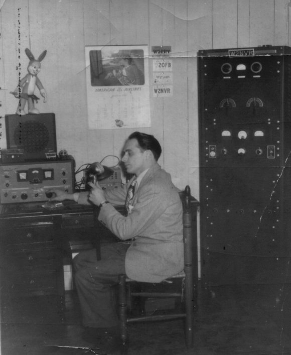

| This
is my transmitter I had in January 1947. Notice the 90800 Millen
exciter I used to drive the pair of 812H's modulated by a pair
of 811's.
Been licensed since April 1941 and I'm working to rebuilt the
pictured transmitter using a Millen 90800 again."

|